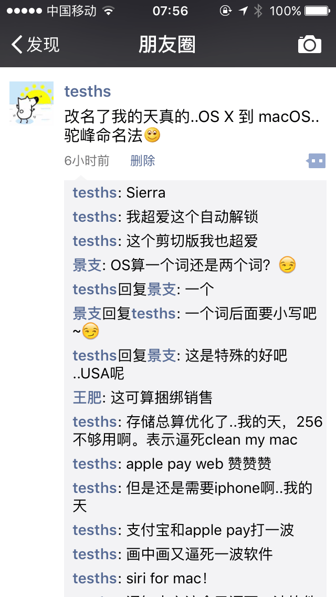
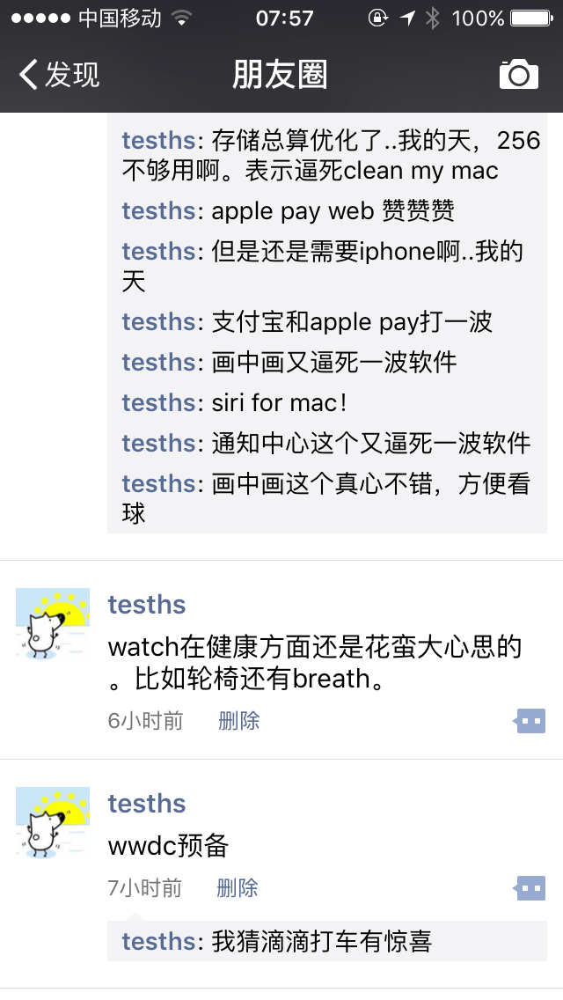
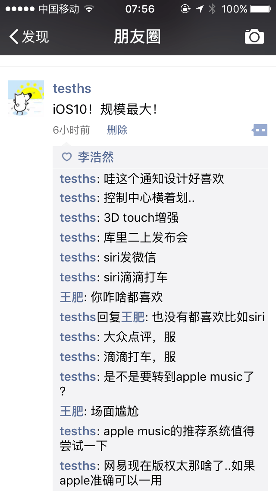
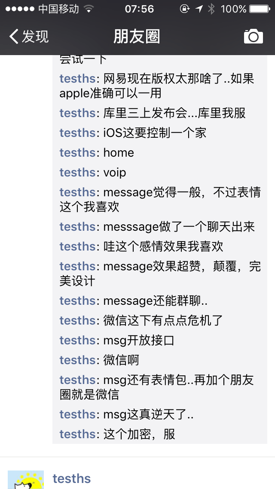
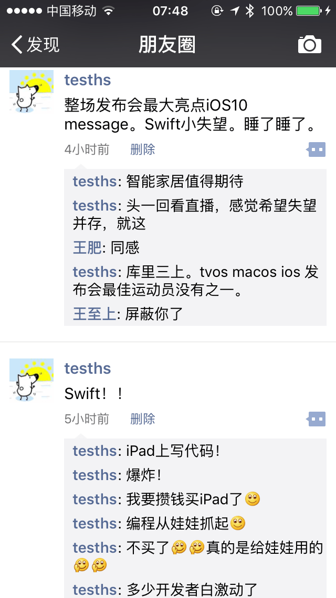

昨晚上十一点多就开始上床，然后快一点起来看了wwdc大会。
这是我开发两年以来第一次看wwdc大会，本来不想写的..天天复习考试也不想写。刚刚看到巧大写了一篇微信，我决定也写一篇。
首先想抱歉一下昨晚上和今天一大早朋友圈的朋友们，被我刷屏了，第一次看未免有点激动。也算是做个记录，后来都删除了只保留了短的。我相信这一定是很多人看到自言自语最长的朋友圈了。
过去的很长时间里，我彻底的开始对mac和iOS的软件开始了狂热，各种买买买和体验，偶尔还自己想想咋做的。所以这次发布会看到macOS还是很激动的。下面依次来说。
watchOS
说实话，我对watch没啥感觉，因为太小了。不过这次watch推出了几个功能我很期待，一个就是加入了游戏的引擎，一个是可以在watch上手写字。游戏这个东西，其实在watch上还有很大想象力。所以，值得期待。
其他我觉得watch最让我喜欢的，是和健康一系列相关的东西，比如一个叫做breath的app，感觉很符合我的口味。虽然感觉高仿了pause。
macOS
改名了，真改名了。从OS X到macOS，以后stackoverflow怎么搜索..驼峰命名也是服。
不过说实话，我超级喜欢。超级期待Sierra。
最新的版本叫Sierra，我想是不是因为集成了siri进去。
终于可以自动解锁，超爱。
剪切板和iphone同步，超爱。
存储优化，刚刚看巧大的文章说是放到icloud，顿时没期待了。。
apple pay要和支付宝进行狙击战了。
还有通知中心可以放文件，这个超期待。一直觉得mac的通知中心没有什么用处，超级鸡肋，这下通知中心可以用起来了。
说实话，siri for mac真的值得期待，就是，我一直觉得对着电脑说话很奇怪..不过siri确实提供了很多东西，值得体验。
虽然吐槽说，逼死了很多软件，但是说实话，就解锁，剪切板，通知中心，我就非常期待了！！
iOS
推了10。
总结一下，就是iMessage要爆炸。
整个iOS10最大的亮点就是iMessage。infoq的群里都在说微信和iMessage…说就差个朋友圈了。
不过说实话，这个可以聊聊。
苹果想好好搞，你真的搞不过它。iMessage设计的，无比的充满想象力。各种神奇的效果，我简直。服了！！！iMessage值得体验。我觉得微信的聊天比起iMessage弱爆了。
iMessage把聊天气泡做的让我觉得，充满了感情。就是这么个感觉。
各种对于图片的效果，包括全屏效果也是，让我觉得更适合去表达感情。就这，就够了，超级nice。
然后就是通知中心这个，有人说像安卓，这么一听，是有点像…
apple music和地图说实话，我不是很期待，因为music我觉得还是不好看。地图的话，得体验才能知道，国内高德什么的还是挺不错的。
苹果特意强调了加密，这点是作为一个大公司来说很重要的。
最后想说说homekit。看苹果这样，想做一套，智能家居，然后用手机连接一切。小时候看虹猫蓝兔3000问，那时候说智能家居，各种神奇的控制，现在看来，不远了。我很期待那一天。
对了，siri可以发微信了..我也是，服了。
Swift
推出了swift playground..很多人以为是ipad上可以写代码了。
尼玛，就是一个给娃娃学编程的软件。
本来想攒钱买ipad的都不想买了。但是可以预见，ipad写代码，这是迟早的事情。
没说Swift3，我表示很失望。
小细节
库里三上发布会
虽然今天输球了。但是库里真的是影响力大，湾区和硅谷也是近。据说勇士已经打入硅谷内部了。
watchOS，macOS和iOS都出现库里了。
表示我库很厉害。
又逼死一波软件
MacID，nearlock，clean my mac。
其他
据说Xcode8很值得期待。图像可以直接预览，支持官方插件。没仔细看。
内置app可以删除一部分了，这个很好。
对于开发者，说实话，我现在觉得watchOS和macOS的市场很大。远超于iOS。第一年看wwdc，只聊我看到的，其他也没花时间看，不多说。网上写的好的比我多了去了。
感觉上没有特别大的api的变化，当然这些新的extension是要去关注的。具体的，巧大的还有cyan大神都写了我也不多说，最后放链接。
最后
开发两年，第一年看wwdc，很感慨，失望和希望并存。失望更多的是Swift上面。其他没啥。希望，当然是我超爱的macOS啦。
未来的一年，我的重心可能会偏mac开发上。资金足够，入watch，顺便看看watchOS的游戏。
最后附上我昨晚上疯狂的朋友圈…这也是我今天这篇博客内容的主要来源。





希望明年我还能充满热情的看wwdc这是我看的第一次，希望有机会可以去现场看
可以参考的链接